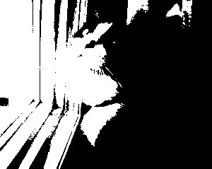
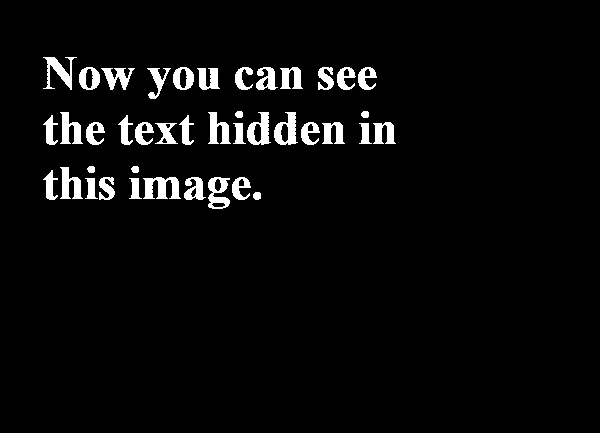
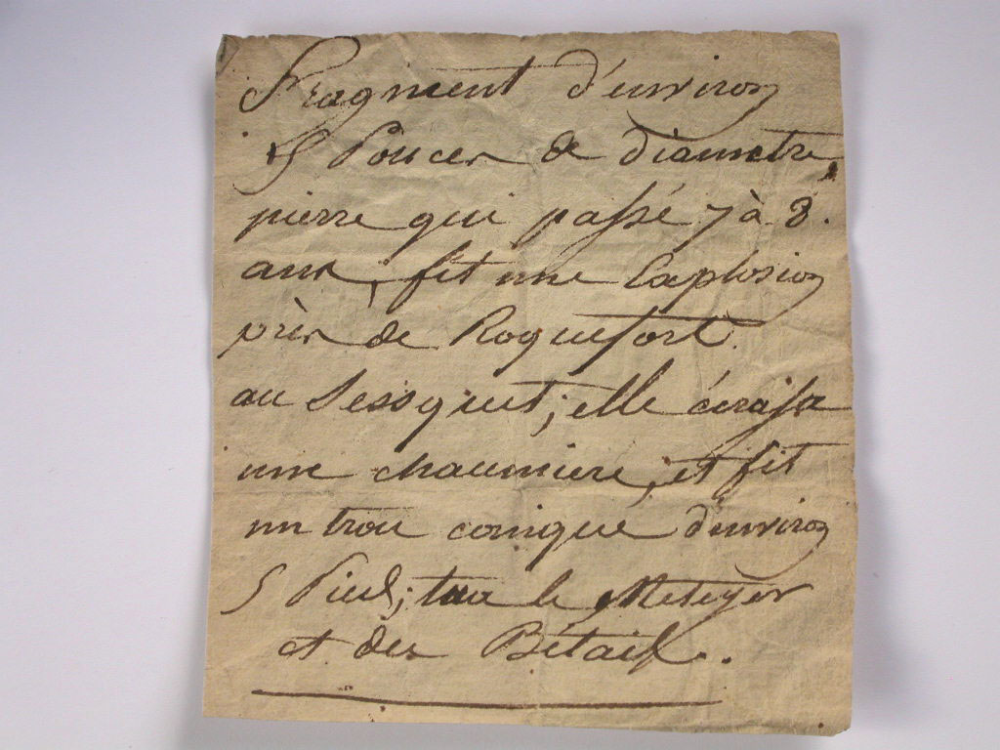
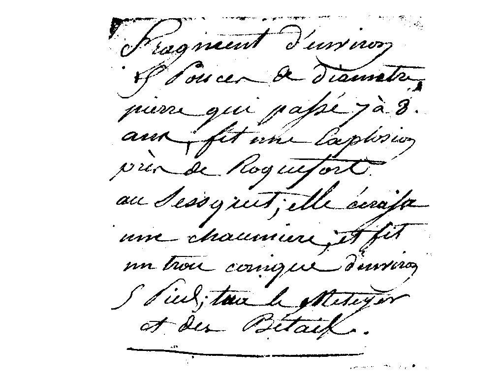
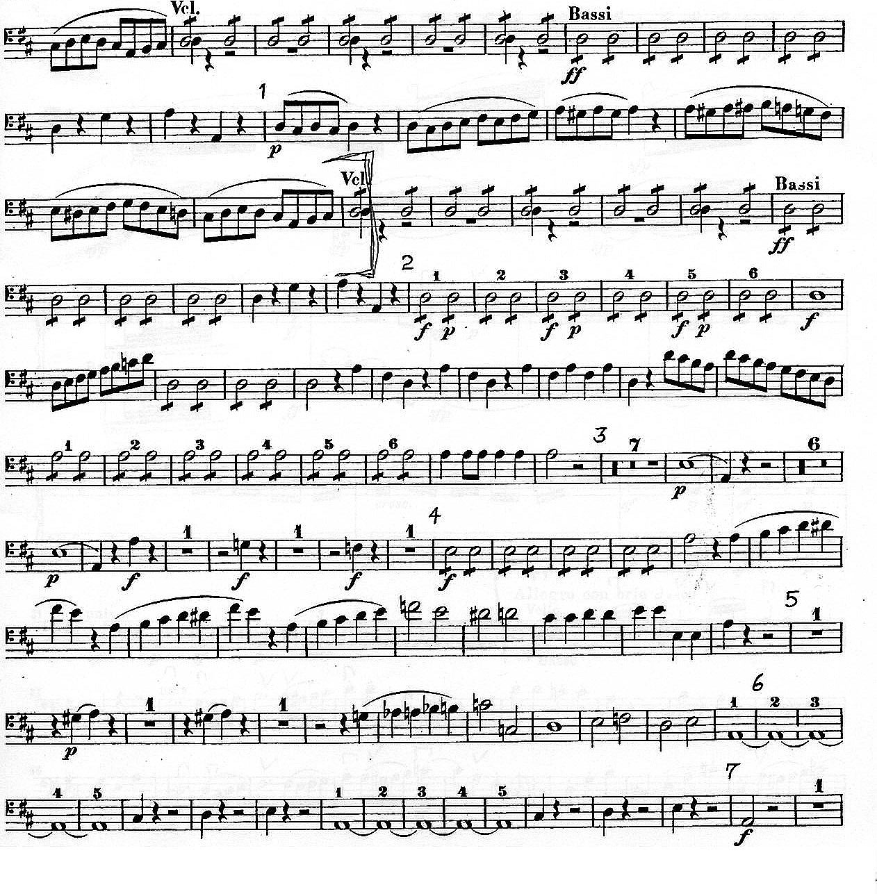

Part 1: The 'best' Bi-level Picture
Threshold values:
Oreo.jpg: 139
image.gif: 1
|  | |
|  |
Part 2: Black Text On White Background
Threshold value: 121. There is quite a range of threshold value that achieves this. Choosing a value within this range depends on the user's goal/preference. Either have a more solid text or have a lesser bolded text (thinner lines) in order to remove most of the black areas picked up from the edges of the paper.
|  |  |
Part 3: Circles Within Squares
Part 4: Image Enhancement
To enhance the edges of this image, I used the sharpen tool. While doing so made the lines and the notes sharper, it made some flaws of the scanned image show up more. As an example, an imprint of a different music sheet becomes more visible. (last lines on the music sheet)
 |
 |